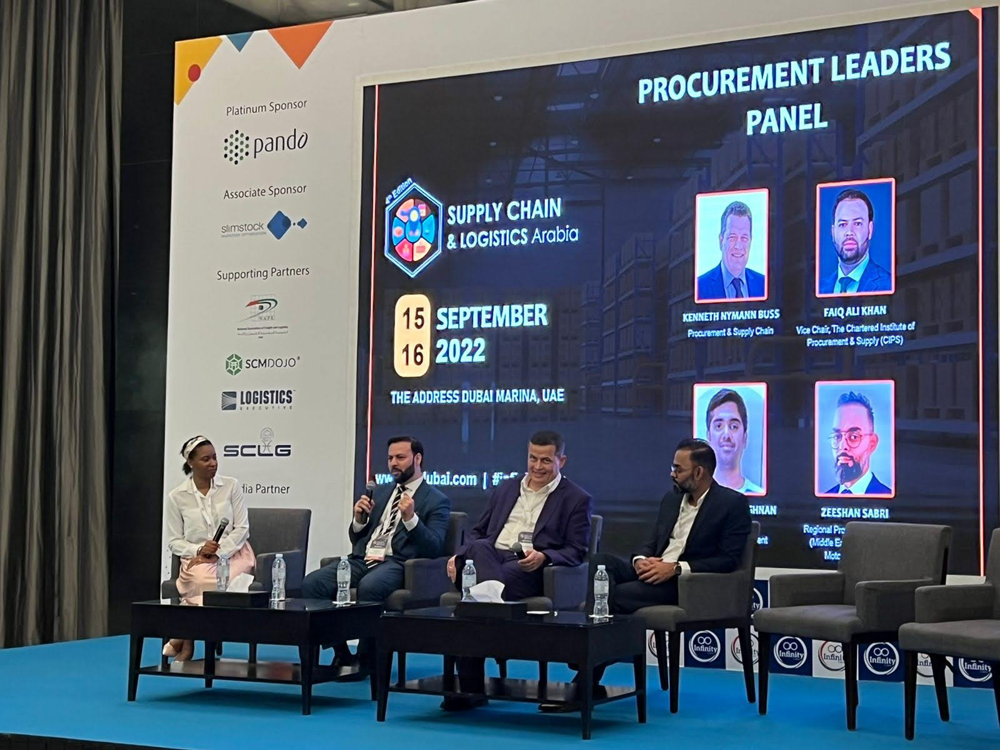
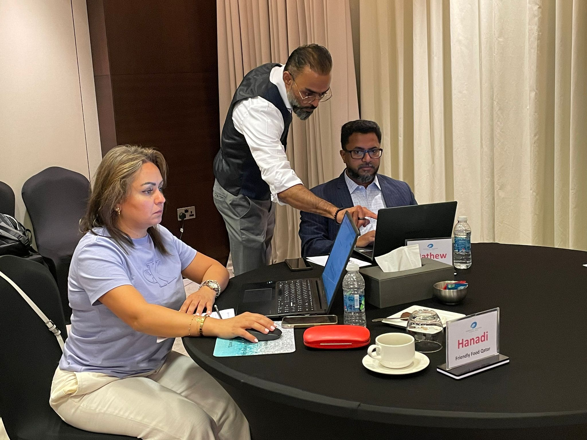

Chapter Eight
Reframing the People
Reframing People, Not Just Processes
"The function had been redesigned on paper. The human architecture inside it had not moved."

By the time the procurement function had been elevated at Huawei — from cost center to strategic intelligence hub — a harder question had emerged. The function was reframed. The people inside it were not yet.
I had watched talented colleagues describe themselves as "PO closers." Not with irony. With resignation. They had absorbed the organization's low opinion of their role and made it their identity. The function had been redesigned on paper, but the human architecture inside it had not moved. This is the gap that most transformation frameworks ignore: you can restructure a department in an afternoon. Reshaping how the people inside it see themselves takes months of deliberate, personal work.
The People Problem
The Function Reframing Framework, as I practice it, is inseparable from the people who live it. You cannot reframe a function without reframing the people within it. And you cannot reframe people through directives. You do it through coaching, through example, and through creating environments where growth is expected rather than exceptional.
Words on the work
Zeeshan has a sharp understanding of digital solutions and a strong ability to align technology with business goals. His strategic thinking and execution have consistently driven tech-enabled growth and exceeded expectations.
Some of the most meaningful moments in this work happened not in boardrooms but in one-on-one conversations. A family friend navigating the transition from Director to VP — a shift that required unlearning tactical habits and embracing a broader, more ambiguous strategic role. He knew procurement. He did not yet know strategy. The gap between those two things was not competence — it was confidence. Younger colleagues who could not see past their job description until someone showed them the strategic map and their position on it.
The Coaching Discipline

Within eighteen months of the procurement elevation at Huawei, colleagues who had described themselves as "PO closers" were operating at a Director or VP level, presenting to boards, and influencing strategic decisions. The $3 million in direct cost savings was the easy metric — the one the finance team understood. The harder metric, and the more important one, was the trajectory of the people: from order processors to strategic partners, from transactional executors to advisors the C-suite consulted before major decisions.
This transformation did not happen through a training program or a reorganization. It happened through consistent, personal investment — showing people the strategic map, inviting them into conversations they had been excluded from, and holding them to a standard they had not yet set for themselves. The playbook is simple. The execution requires patience, presence, and the willingness to coach someone through discomfort rather than around it.